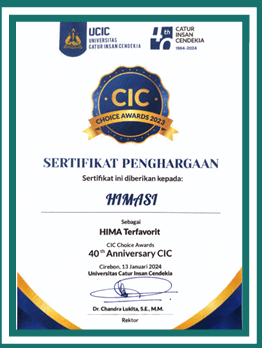
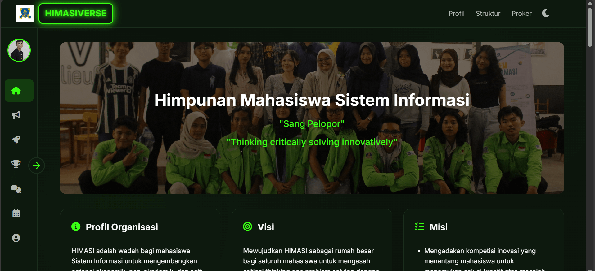
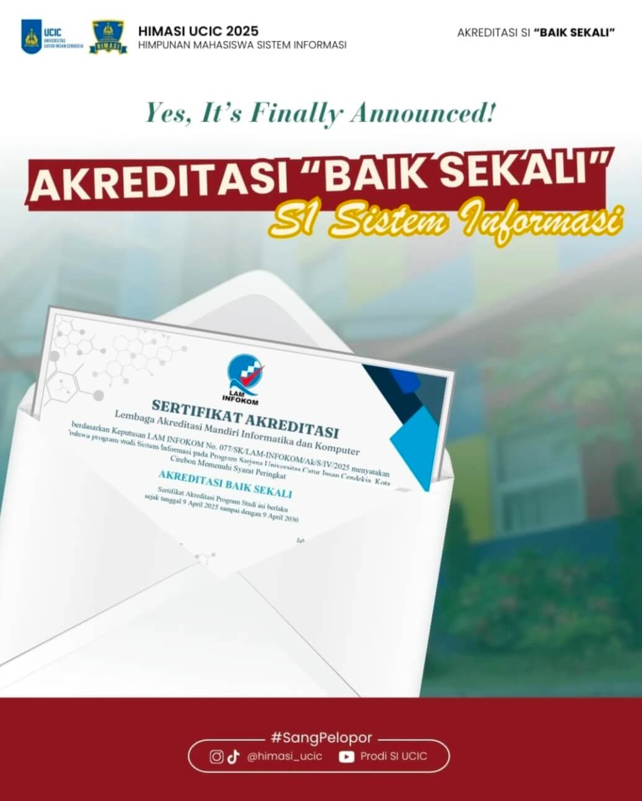
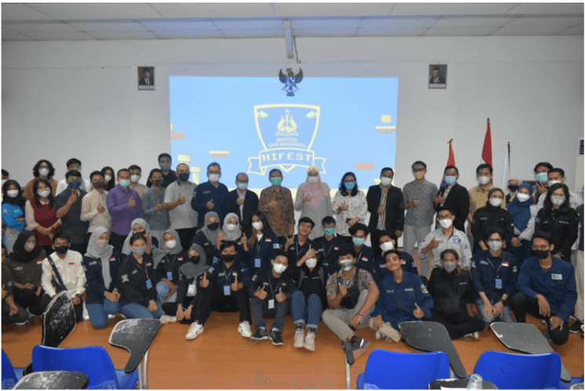
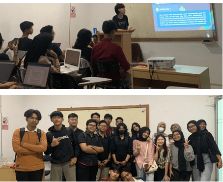
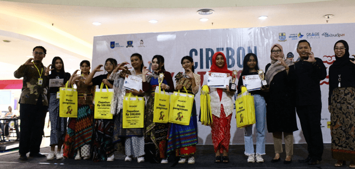
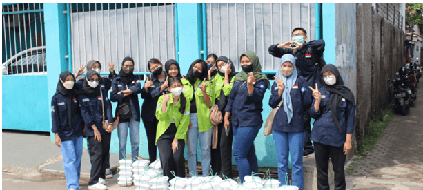
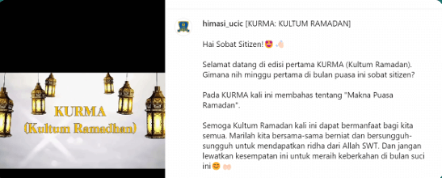
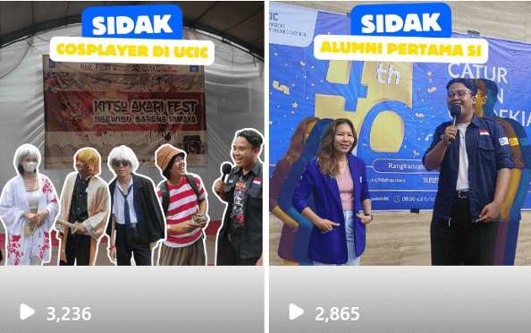

Galeri Prestasi & Karya
Etalase pencapaian dan inovasi organisasi HIMASI dan mahasiswa Sistem Informasi.

Prestasi HIMASI
Penghargaan Himpunan Mahasiswa terfavorit pada acara CIC Choice Awards.

Karya Mahasiswa
Website Sistem Informasi Manajemen Organisasi "HIMASIVERSE"

Prestasi HIMASI
Akreditasi "BAIK SEKALI" Prodi Sistem Informasi UCIC
 Karya HIMASI
Karya HIMASI
MBKM HIMASI mengembangkan UMKM daerah Karyamulya

Karya HIMASI
HIFEST 2022: Ajang Unjuk Gigi Akademik & Mobile Legend

Karya HIMASI
KEMAS (Open Class): Belajar Bersama Pemrograman

Karya HIMASI
Cirebon Kartini Day 2024

Karya HIMASI
HIMASI Care: Berbagi Kepada Masyarakat

Karya HIMASI
Kurma (Kultum Ramadhan) HIMASI

Karya HIMASI